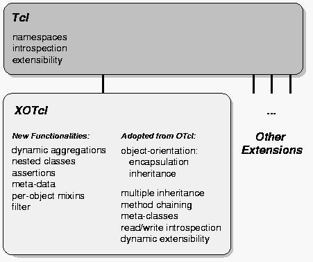
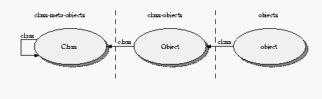
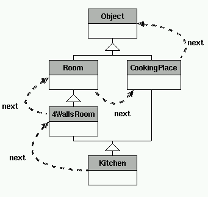
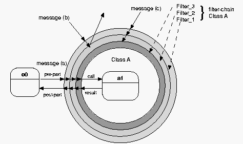
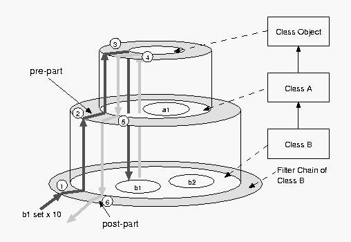

XOTcl - Tutorial - Index
|
XOTcl - Tutorial - Index |
|
Version: 1.2.0
|
|
XOTcl [Neumann and Zdun 2000a] is an extension to the object-oriented scripting language OTcl [Wetherall and Lindblad 1995] which itself extends Tcl [Ousterhout 1990] (Tool Command Language) with object-orientation. XOTcl is a value-added replacement for OTcl and does not require OTcl to compile.
XOTcl runs in the tclsh and provides a few extension commands. These are offered in a Tcl namespace ::xotcl, and need to be imported into the current namespace. All Tcl-commands remain available (and are also applicable on the extension constructs).
A central property of Tcl is, that it uses strings solely for the representation of data. Internally it uses an dynamic type system with automatic conversion (which enables efficient type handling). For that reason all components (e.g. written in C) once integrated in Tcl automatically fit together and the components can be reused in unpredicted situations without change. The evolving component frameworks provide a high degree of code reuse, rapid application development, and ease of use. The application developer may concentrate on the application task solely, rather than investing efforts in fitting components together. Therefore, in certain applications scripting languages like Tcl are very useful for a fast and high-quality development of software (see [Ousterhout 1998] for more details).
Tcl is equipped with appropriate functionalities for the easy gluing of components, like dynamic typing, dynamic extensibility, and read/write introspection. OTcl is an object-oriented extension to Tcl, which encourages a Tcl-like programming style and is composed of language constructs with properties similar to Tcl. It offers an object-orientation with encapsulation of data and operation without protection mechanisms and single and multiple inheritance. Furthermore it enables to change the relationships dynamically, offers read/write introspection, has a three level class system based on meta-classes and offers method chaining. These abilities are integrated in XOTcl with only slight changes to OTcl visible to the programmer.
The XOTcl extension aims at complexity and adaptability issues that may occur in context of large (object-oriented) software structures and in the context of component glueing. In particular we added the following support:
Filters as a means of abstractions over method invocations to implement large program structures, like design patterns.
Mixin Classes, as a means to give an object or a classes' instances access to several different supplemental classes, which may be changed dynamically.
Dynamic Object Aggregations, to provide dynamic aggregations through nested namespaces.
Nested Classes, to reduce the interference of independently developed program structures.
Assertions, to reduce the interface and the reliability problems caused by dynamic typing and, therefore, to ease the combination of components.
Meta-data and Automatic Documentation, to enhance self-documentation of objects and classes.
Figure 1: Language Extensions of XOTcl
|
 |
To give you an impression of the language before we go into the details of the language construct, we present in this section a simple, introductory example. It shall demonstrate the basic language constructs on the example of a soccer club (the full code can be found in the xotcl/src/scripts/soccerClub.xotcl file. All the characters in this example are fictitious, and any resemblance to actual persons, living or deceased, is coincidental.
In XOTcl we do not have to provide a file description as a comment, but we can use the @ object, which is used generally to provide any kind of information, meta-data, and documentation on a running program. Here, we just give a file description. Then the makeDoc.xotcl tool can automatically document the program file for us.
@ @File {
description {
This is a simple introductory example for the language XOTcl.
It demonstrates the basic language constructs on the example of
a soccer club.
}
}
All things and entities in XOTcl are objects, a special kind of objects are classes. These define common properties for other objects. For a soccer club, we firstly require a common class for all kinds of members.
Common to all members is that they have a name. Common properties defined across all instances of a class are called 'parameter' in XOTcl. In this example the instance variable name will be initialized by default with an empty string.
Class ClubMember -parameter {{name ""}}
A special club member is a Player. Derived classes can be build with inheritance (specified through superclass). Players may have a playerRole (defaults to NONE).
Class Player -superclass ClubMember -parameter {{playerRole NONE}}
Other club member types are trainers, player-trainers, and presidents:
Class Trainer -superclass ClubMember Class President -superclass ClubMember
The PlayerTrainer uses multiple inheritances by being both a player and a trainer:
Class PlayerTrainer -superclass {Player Trainer}
Now we define the SoccerTeam class:
Class SoccerTeam -parameter {name location type}
We may add a player. This is done by a method. Instance methods are in XOTcl defined with instproc. All club members are aggregated in the team (denoted by :: namespace syntax).
SoccerTeam instproc newPlayer args {
# we create a new player who is part of the soccer team
# "eval" is needed to pass the provided arguments to the call of new
eval Player new -childof [self] $args
}
A player can be transfered to another team. The player object does not change internally (e.g. the playerRole stays the same). Therefore we move it to the destination team.
SoccerTeam instproc transferPlayer {playername destinationTeam} {
# We use the aggregation introspection option children in order
# to get all club members
foreach player [my info children] {
# But we only remove matching playernames of type "Player". We do
# not want to remove another club member type who has the same
# name.
if {[$player istype Player] && [$player name] == $playername} {
# We simply 'move' the player object to the destination team.
# Again we use a unique autoname in the new scope
$player move [set destinationTeam]::[$destinationTeam autoname player%02d]
}
}
}
Finally we define two convenience to print the members/players to the stdout with puts.
SoccerTeam instproc printMembers {} {
puts "Members of [my name]:"
foreach m [my info children] {puts " [$m name]"}
}
SoccerTeam instproc printPlayers {} {
puts "Players of [my name]:"
foreach m [my info children] {
if {[$m istype Player]} {puts " [$m name]"}
}
}
Now let us build to example soccer team objects.
SoccerTeam chelsea -name "Chelsea FC" -location "Chelsea" SoccerTeam bayernMunich -name "F.C. Bayern München" -location "Munich"
With addPlayer we can create new aggregated player objects
Let us start some years in the past, when "Franz Beckenbauer" was still a player.
set fb [bayernMunich newPlayer -name "Franz Beckenbauer" \
-playerRole PLAYER]
playerRole may not take any value. It may either be NONE, PLAYER, or GOALY ... such rules may be given as assertions (here: an instinvar gives an invariant covering all instances of a class). In XOTcl the rules are syntactically identical to if statements:
Player instinvar {
{[my playerRole] == "NONE" ||
[my playerRole] == "PLAYER" ||
[my playerRole] == "GOALY"}
}
If we break the invariant and turn assertions checking on, we should get an error message:
$fb check all
if {[catch {$fb set playerRole SINGER} errMsg]} {
puts "CATCHED EXCEPTION: playerRole has either to be NONE, PLAYER, or TRAINER"
# turn assertion checking off again and reset to PLAYER
$fb check {}
$fb set playerRole PLAYER
}
But soccer players may play quite different, orthogonal roles. E.g. Franz Beckenbauer was also a singer (a remarkably bad one). However, we can not simply add such orthogonal, extrinsic extensions with multiple inheritance or delegation. Otherwise we would have either to build a lot of unnecessary helper classes, like PlayerSinger, PlayerTrainerSinger, etc., or we would have to build such helper objects. This either leads to an unwanted combinatorial explosion of class or object number
Here we can use a per-object mixin, which is a language construct that expresses that a class is used as a role or as an extrinsic extension to an object.
First we just define the Singer class.
Class Singer
Singer instproc sing text {
puts "[my name] sings: $text, lala."
}
Now we register this class as a per-object mixin on the player object:
$fb mixin Singer
And now Franz Beckenbauer is able to sing:
$fb sing "lali"
But Franz Beckenbauer has already retired. When a player retires, we have an intrinsic change of the classification. He *is* not a player anymore. But still he has the same name, is club member, and is a singer (brrrrrr).
Before we perform the class change, we extend the Player class to support it. I.e. the playerRole is not valid after class change anymore (we unset the instance variable).
Player instproc class args {
my unset playerRole
next
}
Now we can re-class the player object to its new class (now Franz Beckenbauer is President of Bayern Munich.
$fb class President# Check that the playerRole isn't there anymore. if {[catch {$fb set playerRole} errMsg]} { puts "CATCHED EXCEPTION: The player role doesn't exist anymore \ (as it should be after the class change)" }
But still Franz Beckenbauer can entertain us with what he believes is singing:
$fb sing "lali"
Now we define some new players for Bayern Munich:
bayernMunich newPlayer -name "Oliver Kahn" -playerRole GOALY bayernMunich newPlayer -name "Giovanne Elber" -playerRole PLAYER
If we enlist the players of Munich Franz Beckenbauer is not enlisted anymore:
bayernMunich printPlayers
But as a president he still appears in the list of members:
bayernMunich printMembers
Now consider an orthonogal extension of a transfer list. Every transfer in the system should be notified. But since the transfer list is orthogonal to SoccerTeams we do not want to interfere with the existing implementation at all. Moreover, the targeted kind of extension has also to work on all subclasses of SoccerTeam. Firstly, we just create the extension as an ordinary class:
Class TransferObserver
TransferObserver instproc transferPlayer {pname destinationTeam} {
puts "Player '$pname' is transfered to Team '[$destinationTeam name]'"
next
}
Now we can apply the class as a per-class mixin, which functions exactly like a per-object mixin, but on all instances of a class and its subclasses. The next primitive ensures that the original method on SoccerTeam is called after notifying the transfer (with puts to stdout):
SoccerTeam instmixin TransferObserver
If we perform a transfer of one of the players, he is moved to the new club and the transfer is reported to the stdout:
bayernMunich transferPlayer "Giovanne Elber" chelsea
Finally we verify the transfer by printing the players:
chelsea printPlayers bayernMunich printPlayers
|
|
In XOTcl every object is associated with a class over the class relationship. Classes are special objects with the purpose of managing other objects. ``Managing'' means that a class controls the creation and destruction of its instances and that it contains a repository of methods (``instprocs'') accessible for the instances. Object-specific methods are called ``procs'', instance methods are called ``instprocs''.
The instance methods common to all objects are defined in the root class Object (predefined or user-defined). Since a class is a special (managing) kind of object it is managed itself by a special class called ``meta-class'' (which manages itself). One interesting aspect of meta-classes is that by providing a constructor pre-configured classes can be derived. New user-defined meta-classes can be derived from the predefined meta-class Class in order to restrict or enhance the abilities of the classes that they manage. Therefore meta-classes can be used to instantiate large program structures, like some design patterns (see [Neumann and Zdun 1999a] for more details). The meta-class may hold the generic parts of the structures. Since a meta-class is an entity of the program, it is possible to collect these in pattern libraries for later reuse easily.
XOTcl supports single and multiple inheritance. Classes are ordered by the relationship superclass in a directed acyclic graph. The root of the class hierarchy is the class Object. A single object can be instantiated directly from this class. An inherent problem of multiple inheritance is the problem of name resolution, when for example two super-classes contain an instance method with the same name. XOTcl provides an intuitive and unambiguous approach for name resolution by defining the precedence order along a linear ``next-path'' incorporating the class and mixin hierarchies, which is modeled after CLOS. A method can invoke explicitly the shadowed methods by the predefined command next. When this command is executed a shadowed method is ``mixed into'' the execution of the current method. Method chaining without explicit naming of the targeted method is very important for languages supporting a dynamic class system, because one cannot always predict which classes are currently participating in the inheritance hierarchy at design time (often necessary in inheritance models, like C++).
An important feature of all XOTcl objects is the read/write introspection. The reading introspection abilities of XOTcl are packed compactly into the info instance method which is available for objects and classes. All obtained information can be changed at run-time dynamically with immediate effect. Unlike languages with a static class concept, XOTcl supports dynamic class/superclass relationships. At any time the class graph may be changed entirely using the superclass method, or an object may change its class through the class method. This feature can be used for an implementation of a life-cycle or other intrinsic changes of object properties (in contrast to extrinsic properties e.g. modeled through roles and implemented through per-object and per-class mixins [Neumann and Zdun 1999c] ) . These changes can be achieved without loosing the object's identity, its inner state, and its per-object behavior (procs and per-object mixins).
Figure 2: Object and Class System
|
 |
|
|
Initially XOTcl offers two new commands: Object and Class. They represent hooks to the features of the language. This section discusses both of them in detail and shows how they function in the context of XOTcl. Note, that even if most of this is compatible to OTcl, a few changes occur. For this reason, this section is no introduction to plain OTcl. The Object command provides access to the Object class, which holds the common features of all objects, and allows us to define new objects. Objects are always instances of classes, therefore, objects defined with the Object command are (initially) instances of the Object class. But since they have no user-defined type, they may be referred to as singular objects. As all other objects they may be specialized by object-operations and -data.
The object command has the following syntax:
Object objName ?args?
A command of this form is a short-cut for a message to the create instance method (forwarded automatically by the unknown mechanism, which is invoked every time the message dispatch system discovers an unknown message):
Object create objName ?args?
It creates a new object of type Object with the name objName (in fact it invokes a create call on the Object class). objName becomes a new command, which allows us to access the created object. Similar to the Object command it may be used like a normal Tcl-command (using sub-commands to access the object's methods). Therefore, this form of access is called object-command approach. A simple example is an object which holds the information of a kitchen. It is created by:
Object kitchen
An object creation calls the constructor init of the object's class. The destruction of an object is handled by the destroy instance method. The general syntax of destroy is:
objName destroy
E.g. the kitchen object is destroyed by:
kitchen destroy
To invoke a user-defined destruction process, it is possible to overload this instance method in every class derived from object.
The Object class provides a range of operations to manage objects, including those to manipulate data-structures on the objects. They are similiar to the same-named Tcl-commands:
objName set varname ?value? objName unset v1 ?v2 ... vn?
The set instance method with given value option allows us to manipulate an object-variable's value or to create a new one, if the variable varname does not exist on the object so far. Without value option the set operation queries the variable and returns it's value, if the variable exists, otherwise it produces an error message. The unset operation deletes one or optionally a set of variables from an object. For example the kitchen object can store information on the color of the wall-paper by:
kitchen set wallPaperColor white
Similar to Tcl-variables the object variables are dynamical; they may be set at run-time when they are needed and unset when they become obsolete. E.g. the persons in the kitchen may be stored in an array. If there are no persons in the kitchen the array is deleted:
# Peter enters the kitchen to cook kitchen set persons(cook) Peter ...# Marion enters the kitchen to take one of the seats kitchen set persons(seat1) Marion ...# Both Peter and Marion leave the kitchen # the array is deleted by unset kitchen unset persons
Since XOTcl variables are internally realized through Tcl-variables they may be treated like all Tcl-variables. For that reason they have all Tcl-variable abilities, including the possibility to handle them as lists or arrays (as seen in the last example). The array command of Tcl is mapped to an XOTcl-command directly. An object-oriented call to an object of the form
objName array option ary args
forwards its arguments to an array Tcl-command for the object´s instance variable ary. It could be used like the same-named Tcl-command, e.g. the command
kitchen array names persons
returns all indexes currently stored in the persons array.
Similarly Tcl´s incr command is mapped to the object system. A call with the syntax:
objName incr varName ?value?
increments varName with the given value (or without given value with 1).
Methods in XOTcl resemble Tcl-procedures. On objects one can define object-specific methods, called procs. Instance methods which are defined on classes are called instprocs. A new proc is defined using the proc instance method of the class Object:
objName proc name args body
The arguments of the proc instance method specify the name, the arguments as a Tcl-list, and the body of the new proc. All of them must be given, only one of args and body may be empty. An example proc would be a method to let persons enter the kitchen:
kitchen proc enter {name} {
[self] set persons($name) [clock seconds]
}
Here the predefined self command is used in one of three possible ways, which allow us to access useful information when working with XOTcl-methods, these are in particular:
self: returns the name of the object, which is currently in execution. This command is similar to this in C++. It is automatically generated on each object. If it is called from outside of an XOTcl method, it produces the error message "Can't find self".
self class: the self command with the argument class returns the name of the class, which holds the currently executing instproc. Note, that this may be different to the class of the current object. If it is called from a proc it returns an empty string.
self proc: the self command with the argument proc returns the name of the currently executing method (proc or instproc).
The method enter can be written in XOTcl as well with less syntactic overhead by using the predefined primitive my instead of [self]:
kitchen proc enter {name} {
my set persons($name) [clock seconds]
}
Note, that there is a difference to the realization of these object informations to OTcl. XOTcl uses commands in order to make XOTcl-methods compatible to Tcl-procedures and accessible via namespace-paths. OTcl uses the three variables self, class and proc, which are filled automatically with proper values by the interpreter each time a method is called. To gain backwards compatibility XOTcl can be compiled with -DAUTOVARS to provide these variables additionally. By default this option is turned off.
Each XOTcl-method has its own scope for definition of local variables for the executing method. In most cases when a method uses object-variables, it is likely that the programmer wants to make one or more of these variables part of the method's scope. Then the Tcl-command for variable handling, like set, lindex, array, ... work also on these variables. The instvar instance method links a variable to the scope of an executing method. It has the syntax:
objName instvar v1 ?v2 ... vn?
It makes the variables v1 ... vn, which must be variables of the object, part of the current method's scope. A special syntax is:
objName instvar {varName aliasName} ...
for one of the variables. This gives the variable with the name varName the alias aliasName. This way the variables can be linked to the methods scope, even if a variable with that name already exists in the scope. Now the enter method can be adapted slightly and a leave method can be added, which uses Tcl's info command to check whether the named person is in the object's persons array. To demonstrate the alias-syntax this is done with the persons array and the alias p.
kitchen proc enter {name} {
my instvar persons
set persons($name) [clock seconds]
}
kitchen proc leave {name} {
my instvar {persons p}
if {[info exists p($name)]} {
puts "$name leaves after [expr {[clock seconds]-$p($name)}] seconds"
unset p($name)
} else {
puts "$name is not in the room"
}
}
XOTcl offers reading and writing introspection. The reading introspection abilities are packed compactly into the info instance method which is available for objects and classes (there are special info options for object aggregations, nested classes, mixins, filters, meta-data and assertions, which are explained separately in the following sections). The info instance method's options, from the view of an object, are summarized in the following table. They are identically to the OTcl info options on objects.
Options for the info method on objects
| objName info args methodName |
Returns the arguments of the specified method. |
| objName info body methodName |
Returns the body of the specified method. |
| objName info class ?className? |
Returns the name of the class of the current object, if className was not specified. Otherwise it returns 1 if className matches the object's class and 0 if not. |
| objName info commands ?pattern? |
Returns all commands defined on the object if pattern was not specified. Otherwise it returns all commands that match the pattern. |
| objName info default methodName arg var |
Returns 1 if the argument arg of the specified method has a default value, otherwise 0. If the default value exists it is stored in var. |
| objName info procs ?pattern? |
Returns all procs defined on the object if pattern was not specified, otherwise it returns all procs that match the pattern. |
| objName info vars ?pattern? |
Returns all variables defined on the object if pattern was not specified, otherwise it returns all variables that match the pattern. |
For example on the kitchen object
kitchen info procs
returns enter and leave as a Tcl-list since these are the procs defined on the object.
There are different ways to create a class in XOTcl. They have in common that they derive the new class from a meta-class. Initially the Class command provides access to the meta-class Class, which holds the features common to all classes. It also allows one to derive new meta-classes. The common way to create a new class is:
Class className ?args?
Similar to the object short form, this is a short form of a call to the create instance method of the meta-class Class, which is also executed by the standard unknown mechanism. This mechanism is always triggered when XOTcl does not know a method called on an object. Supposed that there is no method with the name className, defined on the class-object of Class, XOTcl looks up the method unknown (which is found on the Class Object) and executes it. The standard unknown-mechanism of XOTcl calls create with all arguments stepping one step to the right; in the general case:
Class create className ?args?
This may also be called directly. Besides the indirection when using unknown, in most cases there is no difference in the action performed: Firstly the memory is allocated, using the alloc instance method; as the next step the constructor init is called on the creating object, which is in this case the class-object of the meta-class Class. In seldom cases the programmer may want to suppress the init call. To do so the alloc instance method may also be called directly:
Class alloc className ?args?
As seen in the preceding section objects are created in the same way. The difference was, that the command Object, which accesses a class, instead of the command Class, which accesses a meta-class, was used. The user-defined classes may also be used in the same way to create new objects:
className objName ?args?
Resembling the creation of classes this creates an object objName of type className using the unknown mechanism. That means the create instance method of the class is called. If there is no other instance method defined on the class-path so far (which would mean, an user defined creation process is invoked), the create instance method of the class Object is invoked. This method is similar to the create method of the meta-class Class. It firstly calls the alloc instance method on its (of the Class class) which allocates memory for the object, and makes it an instance of it's class. Afterwards a call to the constructor init is invoked.
Now we can specify the object for the kitchen by the class to which it belongs. In this case a kitchen is an instance of a room.
Class Room Room kitchen
A set call on a class creates an instance variable on the class-object. This variable is unique for all instances, therefore, it may be referred to as a class variable.
Methods in classes are called "instprocs". Instprocs are reachable for the class-object and all other instances of the class. The syntax for defining an instproc is:
className instproc procname args body
It is similar to the definition of procs on objects, but uses the keyword instproc to distinguish between the methods defined on the class-object and those defined on the class. Since all rooms (in the modeled world) have ceilings, we may want to define a simple convenience instproc, which is able to set the color:
Room instproc setCeilingColor color {
my set ceilingColor $color
}
A special instproc, the constructor init, was mentioned already. Now we are able to define such an instproc. Defined on a class it is responsible for all initialisation tasks, which needed to be performed, when constructing a new instance object of the class. The constructor of the Room can initialize a variable for the color, in which the ceiling is painted, to white as default, since this is the color of ceilings without painting.
Room instproc init args {
my setCeilingColor white
next
}
After this definition, all instances derived from the Room class have an instance variable ceilingColor with the value white. The args argument used here is a special argument in Tcl which allows us to use a list of arguments which may change its length from call to call.
Resembling to objects, information on classes may be gained through the info instance method of the meta-class Class. Note that this instance method does not only support the class info options, but also the object info options, since the accessing command refers to the class-object, which itself is an object and, therefore, offers its informations. The following table summarizes the additional info options available on classes.
Options for the into method on classes
| className info heritage ?pattern? | Returns a list of all classes in the precedence order of the class hierarchy matching pattern or a list of all classes, if pattern was not specified. |
| className info instances ?pattern? | Returns a list of the instances of the class matching pattern or of all instances, if pattern was not specified. |
| className info instargs methodName | Returns the arguments of the specified method. |
| className info instbody methodName | Returns the body of the specified method. |
| className info instcommands ?pattern? | Returns all commands defined on the class, if pattern was not specified, otherwise it returns all commands that match the pattern. |
| className info subclass ?className2? | Returns a list of all subclasses of the class, if className2 was not specified, otherwise it returns 1 if className2 is a subclass and 0 if not. |
| className info superclass ?className2? | Returns a list of all super-classes of the class, if className2 was not specified, otherwise it returns 1 if className2 is a superclass and 0 if not. |
Besides encapsulation of operations and state in objects, a second central ability of object-orientation is inheritance. XOTcl supports single and multiple inheritance with a directed acyclic class graph. Automatically each new class created by the instance methods create and alloc of Class inherits from Object. Therefore, it is ensured that all instances of the new class have access to the common features of objects stored in the class Object.
To specify further inheritance relationships the instance methods superclass of Class is used:
className -superclass classList
E.g. in the example a kitchen may be seen as a special room:
Class Room Class Kitchen -superclass Room
Now all instances of Kitchen are able to access the operations stored in the Room and in the Kitchen class. Note the transition the kitchen was going through: firstly it was a singular object, then it was an object with a user-defined class, and now it is a class. This is possible (and not senseless) because of the per-object specialisation ability and the dual shape of a class, which is at the same time object and class. Both lead to a seamless connection of the run-time properties (the object features) and their descriptive properties (the class features). It is possible to avoid the strict distinction between them, known from static typed languages, like C++, Java, etc.
Moreover, since the syntaxes of constructs expressing the same concern are nearly identical, we can refactor a solution with very few changes to the alternative. We will see similar "ease of refactoring" throughout the XOTcl language. E.g., we can also easily refactor the class hierarchies or exchange class hierarchies against mixin solutions with only slight changes in the code.
Besides single inheritance, as seen, XOTcl provides also multiple inheritance. This is syntactically solved by giving the superclass instance method a list of classes instead of a single class as argument.
Class Room
Class 4WallsRoom -superclass Room
Class CookingPlace
Class Kitchen -superclass {4WallsRoom CookingPlace}
Now the kitchen class is specialized a bit more. It is a special room which has four walls and it is a cooking place. Multiple inheritance, as seen here, is as simple to apply as single inheritance.
Most often when the disadvantages of multiple inheritance are discussed, the name resolution along the class graph is considered as the biggest problem. The question is, which method is to be chosen and which path through class graph is to be taken, if more then one method of the specified name exist on the class graph.
In the example such questions would arise for an object of the Kitchen class, if two same-named methods are defined on CookingPlace and 4WallsRoom or if a method of the class Object is called, which is reachable through two paths (along CookingPlace or Room).
Often - e.g. in the inheritance model of C++ - the path through the graph is not clearly determined and/or the rules are too complicated to be understood on the first glance. The programmer often can only determine by trial which method is found firstly. Than an explicit naming of the class is necessary, which means storage of non-local information in sub-classes. Often different compilers of one language behave differently. All these issues make code reuse difficult. Moreover understandability and portability are reduced.
Figure 3: The example classes and the following next-path
|
 |
XOTcl goes an intuitive and unambiguous way to solve this problem. It resolutes the precedence order along a ``next-path''. Firstly the class of the object is searched, which is Kitchen in example. Then the super-classes are searched in definition order, which means at first 4WallsRoom, then CookingPlace. Each branch is searched completely, before changing to the next branch. That means, Room is searched, before the CookingPlace branch is visited. At last the top of the hierarchy, the class Object, is searched.
The usage of next in XOTcl is different to OTcl: In OTcl it is always necessary to provide the full argument list for every invocation explicitly. In XOTcl, a call of next without arguments can be used to call the shadowed methods with the same arguments (which is the most common case). When arguments should be changed for the shadowed methods, they must be provided explicitly in XOTcl as well. In the rare case that the shadowed method should receive no argument, the flag --noArgs must be used.
Classes are destroyed by the destruction of the class-object using the destroy method of the Object class. The destruction of super-classes does not destroy the sub-classes. The super-class is simply removed from the sub-classes' super-class lists. All classes have the super-class Object, if no super-class is specified. Therefore, if all super-classes are destroyed or removed, the new super-class is Object, not: no super-class. The destruction of the class of an object does neither delete the object nor leave it without class. In XOTcl a deleted class leaves it's instances with the class Object.
So all empty class- and superclass-relationships are automatically reseted to Object. Note, that this are differences to OTcl, where the destruction of an class destroys all instances and an empty super-class list remains empty.
A special feature of XOTcl is the method chaining without explicit naming of the ``mix-in''-method. It allows one to mix the same-named superclass methods into the current method (modeled after CLOS). The previously described next-path is the basis for this functionality. At the point marked by a call to the next primitive of XOTcl the next shadowed method on the next path is searched and, when it is found, it is mixed into the execution of the current method. When no method is found, the call of next returns an empty string, otherwise it returns the result of the called method. Note, that the realization through a primitive command -- similar to the self command -- is a difference to OTcl, where next is realized through an instance method of Object. The syntax is:
next ?arguments|--noArgs?
Note, that also the usage of next in XOTcl is different to OTcl, since the next call without arguments in OTcl means per default that no arguments are passed. But most often all arguments are passed through to the shadowed method (since it will most likely have the same signature like its predecessor). When all variables should be passed through, in OTcl it is necessary for correct variable substitution to use:
eval $self next $args
To avoid such difficulties, we made the passing of all arguments the default case; a simple
next
performs the task of passing all arguments to the shadowed methods. These arguments are called the standard arguments. If the standard argument feature should not be used, optionally arguments can be given or the flag --noArgs could be set as sole argument, which means that the shadowed method is called with no arguments.
E.g. the following next call ignores the standard arguments and sends the arguments 1 and 2 instead:
next 1 2
As an example all classes involved in the previous example should get a constructor instance method, which simply sets an instance variable on the object:
Room instproc init args {
my set roomNumber 0
next
}
4WallsRoom instproc init args {
my set doorPosition 0
next
}
CookingPlace instproc init args {
my set stoveType electric
next
}
Kitchen instproc init args {
my set cookName -
next
}
After creation an object of class Kitchen gets automatically four instance variables cookName, roomNumber, doorPosition and stoveType set up with default values in this order (since this is the order of the classes in the next-path). Note, that the order is important, because one missing next call, in one of the init methods, means that succeeding init methods will not be executed. This mechanism functions equally on all kinds of instprocs, not only on constructors.
The constructors use the args argument, which allows us to give a list of variable length as arguments. To ensure reusability of our classes the constructors should use args in most cases, since they may pass through arguments for constructors further up the class hierarchy.
If a proc with the searched name exists on the object it shadows all instprocs. A next call in a proc leads to the normal next-paths search, starting with the object's class.
By the way, an observant reader might notice that the example above can be rewritten without explicit constructors, just by using paramters with default values.
Class Room -parameter {{roomNumber 0}}
Class 4WallsRoom -superclass Room -parameter {{doorPosition 0}}
Class CookingPlace -parameter {{stoveType electric}}
Class Kitchen -superclass {4WallsRoom CookingPlace} -parameter {{cookName -}}
If an instance of a Kitchen is created it will contain instance variables for doorPosition, cookName, roomNumber, and stoveType, as the following statements will show.
Kitchen k puts [k info vars]
Another property of XOTcl that distinguishes it from statically typed languages are dynamics of class relationships. The realization of the definition of super-classes as seen above with the superclass method suggests already, that it is not only available at the class definition time. In the above example its appended to the class definition with "-superclass" as a short syntax for method invocation at definition time (all other available methods can also be called with a preceding dash ("-") appended to definitions).
At any time the class graph may be changed entirely using the superclass method. Suppose the rooms and kitchens created in modeling of a house should be displayed to a screen, but it is not determined, whether the user of the system has the possibilities for graphical outputs. Two classes TextOutput and GraphicalOutput may be defined, which handle the output. Both have an instproc paint which does the painting of the virtual world on the chosen display type. The common output requirements are handled by a derived class VirtualWorldOutput which calls the paint method of the superclass using next. In statically typed languages it would need more sophisticated constructs to change the output class at run-time. E.g. a delegation to another object handling the intrinsic task of the output object would be introduced solely for the purpose of configuring the output form. With a dynamic class system we can use the superclass method to do so easily:
Class TextOutput
TextOutput instproc paint args {
# do the painting ...
}
Class GraphicalOutput
GraphicalOutput instproc paint args {
# do the painting ...
}
# initially we use textual output
Class VirtualWorldOutput -superclass TextOutput
VirtualWorldOutput instproc paint args {
# do the common computations for painting ...
next; # and call the actual output
}
# user decides to change to graphical output
VirtualWorldOutput superclass GraphicalOutput
Sometimes, such a change to new intrinsic properties should not happen for all instances of a class (or the class hierarchy), but only for one specific object. Then the usage of a dynamic super-class relationship is a too coarse-grained means. A second form of such dynamics is the changing of the relationship between object and class. This means, objects can also change their class dynamically at run-time. This feature may be used to model a life-cycle of an object, without loosing the object's identity, inner state or per-object-specializations through procs. The class instance method enables this functionality.
An example would be an agent for the virtual world. Agents may be placeholders for persons, who interactively travel the world, or programs, which act automatically. When a person decides at run-time to give a task it has performed formerly by hand to an automatic agent, the agents nature changes from interactive agent to automatic agent, but the identity and the local state (that means the parts of the task, that are already fulfilled by the person) stay the same. This is a scenario for changing class relationships, e.g.:
Class Agent Class AutomaticAgent -superclass Agent Class InteractiveAgent -superclass Agent# create a new agent for a person InteractiveAgent agent1# the person does something ... # and decides the change to an automatic agent agent1 class AutomaticAgent
Meta-classes are a special kind of classes. Similar as classes are managing objects (where managing means: control the creation and destruction of instances, know what instances exist, provide methods), meta-classes are managing classes. Since these concepts are sometimes confusing to people of a background of some other programming languages, we explain meta-classes slowly with the analogy of classes and objects.
When a class Foo is created via the command
Class Fooit has no private variables and no special methods. This is somewhat similar as creating an object via Object:
Object fooThis plain object foo can be configured directly, or one can create a class that configures the object. Instead of writing
Object foo
foo set x 1
foo proc hi {} {puts "hello"}
one can use
Class C -superclass Object
C instproc init {} {my set x 1}
C instproc hi {} {puts "hello"}
and create an instance and call the method.
C c1 c1 hiThe same holds for meta-classes and classes as well: Instead of writing
Class Foo
Foo set x 1
Foo proc hi {} {puts "hello"}
the following can be used:
Class MC -superclass Class
MC instproc init {} {my set x 1}
MC instproc hi {} {puts "hello"}
The instances of meta-classes are classes which can be
defined the usual way:
MC Bar Bar hi Bar b1Now we have a class names Bar which has a class-scoped variable named x with the value of 1 (set via the constructor); the class Bar has as well a class-method named hi which prints, when called, the string "hello". The class Bar can be used to create instances of the class like b1, b2 and so on.
Note that the command Class is a predefined definition of the most general meta-class in XOTcl. Each time we are creating a class, we use this meta-class. In order to define a specialized meta-class, we can do this the traditional object-oriented way: we subclass. Therefore, in to define a specialized meta-class, we can use:
Class myMetaClass -superclass Class
This defines a new meta-class myMetaClass, which has all the abilities of meta-classes. That means that the programmer is able to specify new class features or override old ones. Later she/he may instantiate these into new classes.
This is a very powerful language feature, since it allows one to give some classes further abilities than the others (or to restrict classes). This way large program structures, like certain design pattern parts, may be instantiated. Meta-classes hold the common abstract parts of the structures. They allow one to form libraries of such structures very easily.
As a simple example we can derive a new meta-class NoClassInfo from Class. Later we override the info method of Class. Thus the classes created with NoClassInfo, have an info option that only produces an error message. All classes created with NoClassInfo, like Agent in the example below, are not capable of accessing the class info method anymore:
Class NoClassInfo -superclass ClassNow a call like:# redefine info ability NoClassInfo instproc info args { error "No class info avaiable" }# derive agent class from meta-class, which # can not access class info NoClassInfo Agent
Agent info superclass
triggers the error message.
Meta-classes are frequently used to define some bookkeeping about the number of instances on the class level. In the following example we define a meta-class named CountedClass which defines classes that count their instances:
Class CountedClass -superclass Class -parameter {{counter 0}}
CountedClass instproc create args {
my incr counter
next
}
CountedClass instproc instdestroy args {
my incr counter -1
next
}
CountedClass Dog
Dog piffie
Dog idefix
puts "nr of dogs: [Dog counter]"
piffie destroy
puts "nr of dogs: [Dog counter]"
Note that the behavior introduced by meta-classes
can be orthogonal to the behavior of the classes. One can
define Dog as a specialization of Animal
or defines a special kind of dog such as Poodle using
the method superclass as usual.
Finally, a small example, which is more practical. Some applications have the requirement that only one instance of a class might be defined at a certain time. Such a behavior is frequently called a "Singleton". In XOTcl we can define a class singleton by overloading the create method of Class: when create is called and there exists already an instance of the singleton it is returned instead of a new instance.
Class Singleton -superclass Class
Singleton instproc create args {
expr {[my exists instance] ? [my set instance] : [my set instance [next]]}
}
If someone wants to have a class e.g. Manager to be a
singleton, you can create it by e.g.
Singleton Manager -superclass FOO
XOTcl allows since version 0.84 for a flexible destroy and recreate scheme. create and alloc are both Class instprocs handling creation for their instances. I.e.:
className alloc [self]and
className create [self]
are used for creating an instance. A similar method instdestroy exists on Class that handles physical destruction of an object. The method destroy on Object which lets an object destroy itself in fact has the following behavior:
Object instproc destroy args {
[my info class] instdestroy [self]
}
However, this behavior is not implemented in XOTcl, but in C. create distinguishes between the following situations:
givenClass recreate [self]
recreate can be customized e.g. by overloading or interception. By default it calls cleanup followed by doInitializations.
In both cases, the method doInitializations is called automatically from C and has the following default behavior:
Each step has a method call that can be changed, intercepted, etc. Of course, cleanup, recreate, instdestroy, etc. can also be overloaded or intercepted.
Consider a typical case for overloading recreate: a structure preserving recreate that cleans up the class but preserves the existing class hierarchy (subclass and instance relationships):
Class StructurePreservingRecreate
StructurePreservingRecreate instproc recreate {cl args} {
if {[my isclass $cl]} {
set subclass [$cl info subclass]
set instances [$cl info instances]
}
next
if {[my isclass $cl]} {
foreach sc $subclass {
$sc superclass $cl
}
foreach i $instances {
$i class $cl
}
}
}
Object instmixinappend StructurePreservingRecreate
Now the following code does not change the superclass or instance relationships of C:
Class A
Class B
Class C -superclass {A B}
Class D
Class E -superclass {C D}
C c1
C c2
# recreate -> is structure preserving
Class C -superclass {A B}
C c2
# test
puts superclass=[C info superclass]
puts subclass=[C info subclass]
puts instances=[C info instances]
puts class=[c1 info class]
puts class=[c2 info class]
|
|
Even though object-orientation orders program structures around data, objects are characterized primarily by their behavior. Object-oriented programming style encourages the access of encapsulated data only through the methods of an object, since this enables data abstractions. A method invocation can be interpreted as a message exchange between the calling and the called object. Therefore, objects are at runtime only traceable through their message exchanges. At this point the message interceptors can be applied to catch and manipulate all incoming and outgoing messages of an object.
Generally interceptors can be applied to attach additional or extrinsic concerns to an object or a class or a class hierarchy. For instance roles or aspects can be implemented this way on various levels of scale.
We have already discussed some interception techniques implicitly. E.g., the unknown mechanism intercepts messages that have not be found on the object. It can be used as a very useful programming technique, e.g., the define a default behavior for an object. The interceptors presented in this section have a different character: They are applied before/after the original method even if the method is defined for the target object. Thus these interception techniques may be applied
We will discuss the message interceptors in this section in detail. The table below gives an impression, when which interceptor may be applied.
Message Interceptors Overview
|
Applied When |
Primary Target Structure |
Coverage |
|
|
Per-Object Filter |
before/after a call |
object hierarchies |
all methods |
|
Per-Class Filter |
before/after a call |
class and class hierarchies |
all methods |
|
Per-Object Mixin |
before/after a call |
object |
specific methods |
|
Per-Class Mixin |
before/after a call |
class and class hierarchies |
specific methods |
|
Unknown Mechanism |
after method was not found |
object |
all unknown calls |
The filter (see [Neumann and Zdun 1999a] for more details) is a language construct to implement broader extensional concerns either for a single object or for several classes or class hierarchies. This way large program structures at the scale of several classes or class hierarchies can be managed. It is a very general interception mechanism which can be used in various application areas. E.g. a very powerful programming language support for certain design patterns is easily achievable, but there are also several other domains which are covered, like tracing of program structures, self-documentation at run-time, re-interpretation of the running program, etc.
A per-class filter is a special instance method that is registered for a class C. A per-object filter is a special instance method that is registered for a object o. Every time an object of class, C or the object o respectively, receives a message, the filter method is invoked automatically.
All messages to a filtered object must go through the filter before they reach their destination object. A simple example would be a sole filter on the class of the object. To define such a filter two steps are necessary. Firstly an filter method has to be defined, then the filter has to be registered. The filter method consists of three parts which are all optional. A filter method has the following form:
className instproc FilterName args {
pre-part
next
post-part
}
When a filter comes to execution at first the actions in the pre-part are processed. The filter is free in what it does with the message. Especially it can (a) pass the message, which was perhaps modified in the pre-part, to other filters and finally to the object. It can (b) redirect it to another destination. Or it can (c) decide to handle the message on its own. The forward passing of messages is implemented through the next primitive of XOTcl. After the filter has passed its pre-part, the actual called method is invoked through next.
After the call of next is processed, the execution returns to the point in the filter, where the next call is located and resumes execution with the actions of the post-part. These may contain arbitrary statements, but especially may take the result of the actual called method (which is returned by the next-call) and modify it. The caller then receives the result of the filter, instead of the result of the actual called method.
The pre- and post-part may be filled with any ordinary XOTcl-statements. The distinction between the three parts is just a naming convention for explanation purposes.
The filter uses the args argument which lets us use a list of variable length as arguments, since it must filter a lot of different calls, which may have different argument lists. Furthermore, it may pass through arguments to other filters and the preceding filters may change the argument list.
Since any proc/instproc may be a filter, a registration of the filter is necessary, in order to tell XOTcl, which instprocs are filters on which classes. The filter and instfilter instance methods are able to handle this task for per-object filters and per-class filters respectively. Similar to the XOTcl language introduced so far, the filter registration is dynamic at run-time. By supplying a new list of filters to filter/instfilter, the programmer can change the filters registered on a class at arbitrary times. The filter instance method has the syntax:
className instfilter filterListfor per-class filters and:
objName filter filterListfor per-object filters.
Now a simple example should show the filter's usage. In the preceding examples we have defined several rooms. Every time a room action occurs it is likely that the graphical sub-system has to change something on the output of that particular room. Therefore, at first we need a facility to be informed every time an action on a room happens. This is quite easily done using filters:
Class Room Room r1; Room r2;# just two test objects Room instproc roomObservationFilter args { puts "now a room action begins" set result [next] puts "now a room action ends - Result: $result" return $result } Room instfilter roomObservationFilter
Now every action performed on room objects is notified with a pre- and a post-message to the standard output stream. We return the result of the actual called method, since we don't want to change the program behavior at all. E.g. we can set an instance variable on both of the two room objects:
r1 set name "room 1" r2 set name "room 2"
The output would be:
now a room action begins now a room action ends - Result: room 1 now a room action begins now a room action ends - Result: room 2
Figure 4: Cascaded Message Filtering
|
 |
All classes may have more than one filter. In fact they may have a whole filter chain, where the filters are cascaded through next. The next method is responsible for the forwarding of messages to the remaining filters in the chain one by one till all pre-parts are executed. Then the actual method is executed and then the post-parts come to turn. If one next-call is omitted the chain ends in this filter method. As an example for an additional filter we may register a filter that just counts the calls to rooms.
Room set callCounter 0;# set class variable Room instproc counterFilter args { [self class] instvar callCounter incr callCounter puts "the call number callCounter to a room object" next } Room instfilter {roomObservationFilter counterFilter}
Filters are invoked in registration order. The order may be changed by removing them and adding them in new order. Filters are inherited by sub-classes. E.g. in the preceding example for the next path, an OvalOffice was derived from the Room class. Without a change to the program each OvalOffice object automatically produces the same filter output as rooms.
Figure 5: Filter Inheritance
|
 |
Filter chains can also be combined through (multiple)
inheritance using the next method. When the filter chain of
the object's class is passed, the filter chains of the superclasses
are invoked using the same precedence order as for inheritance. Since
on the subclass there may also be a another filter chain, without
sophisticated computing in the pre- and post-parts one can produce
easily a powerful tracing facility. E.g. if we want to distinguish an
OvalOffice from other rooms we may want to add a filter
solely for rooms of the type OvalOffice:
Class OvalOffice -superclass Room OvalOffice o1;# test object OvalOffice instproc ovalOfficeObservationFilter args { puts "actions in an oval office" next } OvalOffice instfilter ovalOfficeObservationFilter
A simple call to the o1 object, like:
o1 set location "Washington"
produces the following output:
actions in an oval office now a room action begins the call number 3 to a room object now a room action ends - Result: Washington
As seen already, filter registrations can be added dynamically at runtime. But they may also be removed. Perhaps the counting on rooms should stop after a while, then a simple call of the instfilter method is sufficient:
Room instfilter roomObservationFilter
Filters can be removed completely by giving an empty list to the registration method:
Room instfilter {}
Per-object filters operate on a single object. E.g. if we only want to observe a single Room object room1, we can use the filter method to register the roomObservationFilter only for this particular instance:
room1 filter roomObservationFilter
As a filter we can register any method in the precedence order of the class or object. Thus we can also register procs as per-object filters. Additionally, meta-class methods may be registered as per-class filters. Filters are linearized so that each filter is only executed once, even if it is registered multiple times.
className info instfilter objName info filter
A special call-stack info option for filters is self filterreg. It returns the name of the object or class on which the filter is registered. Since the filter may be registered on other objects/classes than the one on which it is defined, this may vary from self class in the filter. The command returns a list of the form:
objName filter filterNameor:
className instfilter filterNamerespectively.
The trace example primarily demonstrates the inheritance of filter chains. Since all classes inherit from Object, a filter on this class is applied on all messages to objects. The Trace object encapsulates methods for managing the tracing:
Object Trace
Trace set traceStream stdout
Trace proc openTraceFile name {
my set traceStream [open $name w]
}
Trace proc closeTraceFile {} {
close $Trace::traceStream
my set traceStream stdout
}
Trace proc puts line {
puts $Trace::traceStream $line
}
Trace proc add className {
$className instfilter [concat [$className info filter] traceFilter]
}
First we define the object and set a variable for the stream to which we send the trace outputs (here: stdout). With a method for opening and a method for closing a file we can redirect the trace stream to a file. puts is helper method for the filter to print an output to the selected output stream. In add the traceFilter is appended to the existing filters of a specified class. The actual filter method (see below) displays the calls and exits of methods with an according message. The calls are supplied with the arguments, the exit traces contain the result values. We have to avoid the tracing of the trace methods explicitly.
Object instproc traceFilter args {
# don't trace the Trace object
if {[string equal [self] ::Trace]} {return [next]}
set context "[self class]->[self callingproc]"
set method [self calledproc]
switch -- $method {
proc -
instproc {::set dargs [list [lindex $args 0] [lindex $args 1] ...] }
default {::set dargs $args }
}
Trace::puts "CALL $context> [self]->$method $dargs"
set result [next]
Trace::puts "EXIT $context> [self]->$method ($result)"
return $result
}
As trace message we write the callee´s context (class and proc), the invoked method (using calledproc), and the given arguments. In the switch statement we avoid to print whole method bodies.
With
Trace add Room
messages to all rooms, including all instances of Room´s sub-classes, are surrounded with a CALL and an EXIT output. With
Trace add Object
messages to all objects in an XOTcl environment are surrounded with a CALL and an EXIT output. In general, it is possible to restrict the trace to instances of certain classes, or to produce trace output for only certain methods. This requires registration methods and a more sophisticated implementation of the filter method.
Per-object and per-class mixins (see [Neumann and Zdun 1999c] for more details) are another interception technique of XOTcl to handle complex data-structures dynamically. Here, we use mixin as a short form for mixin class. All methods which are mixed into the execution of the current method, by method chaining or through a mixin class, are called mixin methods. Mixin classes resembles the filter presented in the preceding section. While the filters work on all calls to all methods of an object/class hierarchy, the mixin classes are applied on specific methods. The filter is defined in a single method, while the mixin is composes several method in a class.
Mixin classes cover a problem which is not solvable elegantly just by the method chaining, introduced so far. To bring in an addition to a class, the normal XOTcl way is to define a mixin method and chain the methods through next, e.g.:
Class Basic
Basic instproc someProc {
# do the basic computations
}
Class Addition
Addition instproc someProc {
# do the additional computations
next
}
In order to mix-in the additional functionality of the supplemental class Addition a new helper class (sometimes called intersection class) has to be defined, like:
Basic+Addition -superclass Addition Basic
This is even applicable in a dynamical manner, every object of the class Basic may be changed to class Basic+Addition at arbitrary times, e.g.:
Basic+Addition basicObj ... basicObj class Basic+Addition
Now consider a situation with two addition classes. Then following set of classes has to be defined to cover all possible combinations:
Class Basic Class Addition1 Class Addition2 Class Basic+Addition1 -superclass Addition1 Basic Class Basic+Addition2 -superclass Addition2 Basic Class Basic+Addition1+Addition2 -superclass Addition2 Addition1 Basic
The number of necessary helper classes rises exponential. For n additions, 2n-1(or their permutations if order matters) artificially constructed helper-classes are needed to provide all combinations of additional mix-in functionality. Furthermore it is possible that the number of additions is unlimited, since the additions may produce other additions as side-effects. This demonstrates clearly that the sub-class mechanism provides only a poor mechanism for mix-in of orthogonal functionality. Therefore we provide an extension in the form of object mixin classes, which are added in front of the search precedence of classes.
The mix-ins methods extend the next-path of shadowed methods. Therefore, per-object mix-in methods use the next primitive to access the next shadowed method. Consider the following example:
Class Agent
Agent instproc move {x y} {
# do the movement
}
Class InteractiveAgent -superclass Agent
# Addition-Classes
Class MovementLog
MovementLog instproc move {x y} {
# movement logging
next
}
Class MovementTest
MovementTest instproc move {x y} {
# movement testing
next
}
An agent class is defined, which allows agents to move around. Some of the agents may need logging of the movements, some need a testing of the movements, and some both (perhaps only for a while). These functionalities are achieved through the additional classes, which we will apply through per-object mixins.
Before we can use the per-object mix-ins on a particular object, we must register the mixins on it with the mixin instance method. It has the syntax:
objName mixin mixinList
For example we may create two interactive agents, where one is logged and one is tested:
InteractiveAgent i1; InteractiveAgent i2 i1 mixin MovementLog i2 mixin MovementTest
At arbitrary times the mixins can be changed dynamically. For example i2's movements can also be logged:
i2 mixin MovementTest MovementLog
Figure 6: Per-Object Mix-ins: Next-Path for the Example
|
|
The mixin option of the info instance method allows us to introspect the per-object mix-ins. It has the syntax:
objName info mixin ?className?
It returns the list of all mix-ins of the object, if className is not specified, otherwise it returns 1, if className is a mixin of the object, or 0 if not.
Note, that the constructors (init methods) of per-object mixins (and per-class mixins) are only called, if the mixin is registered already during object initialization (when init is called). For per-object mixins, one can achieve the initialization of a mixin via an idiom like
Object o -mixin M -initthat registers the mixin before init is called. When a mixin is registered after object creation and it needs initializations, it is necessary to define special methods for this. Note, that the behavior described here is introduced in version 0.84 to ensure consistent behavior of intrinsic classes, per-object and per-class mixins, and to achieve predictable behavior for dynamic registration for all kind of mixins, and as well during recreations of objects having mixins registered. Older versions used heuristics for the initialization of per-object mixins.
Per-class mixins are exactly identical in their behavior to per-object mixins, but they operate on classes. Thus they are the class-specific variant of the per-object mixins, like instprocs are a class-specific variant of procs. Therefore, in the language the per-class mixins are called instmixins.
In general a per-class mixin is a class which is mixed into the precedence order of all instances of the class and all its subclasses it is registered for. It is also searched before the object's class itself is searched, but after per-object mixins.
Per-class mixins are linearized according to the precedence order like classes on the superclass hierarchy. I.e. from the full list of per-object mixins, per-class mixins, and intrinsic classes (and all the superclasses of all these classes) always the last occurrence is used.
From the point of view of language expressibility instmixins are not required, because they cannot express anything that per-object mixins cannot express already (like procs can express any instproc feature). As alternative to instmixins, we could simply register the per-object mixins in the constructor of the class.
But there at least the following reasons for instmixins as an additional language construct:
The mix-ins methods of per-class mixins extend the next-path of shadowed methods in the same way as per-object mixin methods. Before we can use a per-class mix-in on a particular class, we must register the mixin on it with the instmixin instance method. It has the syntax:
className instmixin mixinList
Now consider that in the given per-object mixin example all interactive agents should be tested. We could either build a subclass TestedInteractiveAgent or register the per-object mixin in the constructor of the interactive agent class. The subclass solution leads to the same combinatorial explosion of intersection classes as discussed in the previous section, if more supplemental classes are added. The per-object mixin solution pollutes the constructor and does not prevail the structural semantics that the 'tested' property belongs to the interactive agent class at runtime
Here, we can use a per-class mixin:
Class Agent
Agent instproc move {x y} {# do the movement }
Class InteractiveAgent -superclass Agent
Class MovementTest
MovementTest instproc move {x y} {
# movement testing
next
}
# now register the instmixin
InteractiveAgent instmixin MovementTest
The per-class mixin now operates on all interactive agent including the instances of subclasses. E.g. for interactive agents i1 and i2 we automatically have movement testing. i2 is also logged, since it has the logging class as object-specific mixin:
InteractiveAgent i1 InteractiveAgent i2 -mixin MovementLog i1 move 3 4 i2 move 1 2
At arbitrary times the instmixins can be changed dynamically.
The instmixin option of the class info instance method allows us to introspect the per-class mixins. It has the syntax:
className info instmixin ?className2?
It returns the list of all instmixins of the the class, if className2 is not specified, otherwise it returns 1, if className2 is a mixin of the object, or 0 if not.
Per-class mixins are applied transitively. That means the per-class mixin A of a per-class mixin B is also applied for an object in in B's scope. This is exactly the same as how superclasses are applied for instances. Consider the following example
Class X11 \
-instproc test args {
puts [self class]
next
}
Class X12 \
-instproc test args {
puts [self class]
next
}
Class X \
-instmixin {X11 X12} \
-instproc test args {
puts [self class]
next
}
Class Y \
-instmixin X
Y create y -test
X create x -test
Here the application as a superclass (for x) yields the same result as the application as an instmixin (for y):
::X11 ::X12 ::X
Since the presented interceptors are normal XOTcl instprocs they can access all XOTcl introspection abilities introduced so far. In instprocs all recent information is accessible within their scope. But the interceptors are mechanisms, which cover more then their sole scope. The meaningful usage of the meta-programming abilities often requires to go further and to get information from the caller's and the callee's scope (e.g for delegation decisions). Therefore, we introduced rich call-stack informations for the interceptors. Note, that these are also available for ordinary methods, but the "called..." info options return empty strings.
All call-stack information are packed compactly into the self primitive as additional options. Note, before XOTcl version 0.84 these were implemented as a part of the info method. They are part of the self command for conceptual integrity: introspection options in info can be expected to produce the same result, when they are not explicitly changed. In contrast, all information provided by self are call-stack dependent.
Querying Call-stack Information via self
| self activelevel |
Returns the stack level from where the current command was invoked from, or where the last next was called (whatever is closer to the invocation). If the current command was invoked from an XOTcl method the absolute level is returned (e.g. #4) which can be used in the uplevel or upvar tcl command or XOTcl method. If the current command was not invoked from an XOTcl method, the value 1 is returned. |
| self calledproc |
Returns the name of the method which was invoked in the original call. |
| self calledclass |
Returns the name of the class which presumably (if no dynamic class change occurs afterwards) is invoked in the original call. |
| self callingclass |
Returns the name of the class from which the call was invoked (if one exists, otherwise an empty string). |
| self callinglevel |
Returns the stack level from where the current command was invoked from. In contrary to activelevel next-calls are ignored in the computation. If the current command was invoked from an XOTcl method the absolute level is returned (e.g. #4) which can be used in the uplevel or upvar tcl command or XOTcl method. If the current command was not invoked from an XOTcl method, the value 1 is returned. |
| self callingproc |
Returns the name of the method from which the call was invoked (if one exists, otherwise an empty string). |
| self callingobject |
Returns the name of the object from which the call was invoked (if one exists, otherwise an empty string). |
| self filterreg |
In a filter: returns the name of the object/class on which the filter is registered. Returns either 'objName filter filterName' or 'className instfilter filterName'. |
| self next |
Return the "next" method on the path as a string, i.e. the method which will be called by [next]. |
Note, that three options with the prefix calling represent the values of self, self proc, and self class in the scope where the original call was invoked. In the following section we will show a simple program in which all of the info options have different values.
Now we discuss a simple example that shows that all filter introspection options may have different values:
Class InfoTrace
InfoTrace instproc infoTraceFilter args {
puts "SELF: [self]"
puts "SELF PROC: [self proc]"
puts "SELF CLASS: [self class]"
puts "INFO CLASS: [my info class]"
puts "CALLED PROC: [self calledproc]"
puts "CALLING PROC: [self callingproc]"
puts "CALLING OBJECT: [self callingobject]"
puts "CALLING CLASS: [self callingclass]"
puts "REGISTRATION CLASS: [self filterreg]"
puts "CALLING LEVEL: [self callinglevel]"
puts "ACTIVE LEVEL: [self activelevel]"
next
}
Class CallingObjectsClass
CallingObjectsClass callingObject
Class FilterRegClass -superclass InfoTrace
Class FilteredObjectsClass -superclass FilterRegClass
FilteredObjectsClass filteredObject
CallingObjectsClass instproc callingProc args {
filteredObject set someVar 0
}
FilterRegClass instfilter infoTraceFilterThe invocation of callingObject callingProc produces the following output:
SELF: ::filteredObject SELF PROC: infoTraceFilter SELF CLASS: ::InfoTrace INFO CLASS: ::FilteredObjectsClass CALLED PROC: set CALLING PROC: callingProc CALLING OBJECT: ::callingObject CALLING CLASS: ::CallingObjectsClass REGISTRATION CLASS: ::FilterRegClass instfilter infoTraceFilter CALLING LEVEL: #1 ACTIVE LEVEL: #1
The filter reports for self the value filteredObject, since this is the object on which the set call is invoked; infoTraceFilter is the method of the filter, and therefore, the actual proc, while the actual class is InfoTrace, the filter's class. The class of the actual object is FilteredObjectsClass.
The called procedure is set. While the program stays in a XOTcl-instproc all calling-info-options are set, the calling procedure is callingProc, the calling class is the class, where the method is defined (namely CallingObjectsClass), and the object from which the call invoked is callingObject.
In this example, the calling level is equal to the active level, both are #1.
The precedence order is composed by the precedence order of the superclass hierarchy (as explained earlier) and the message interceptors. In general, filters precede mixins and the superclass hierarchy. They are applied in the order of the next path of the object. Thus per-object filters are ordered before per-class filters.
Mixins are processed after the filters. Again, they are applied in the order of the next path of the object. Thus per-object mixins are ordered before per-class mixins.
Finally, the object's own heritage order comes in the order: object, class, superclasses.
The three precedence order lists (filters, mixins, and classes) are pre-calculated and cached.
Filters as well as classes (mixins and ordinary classes) are linearized. That means, each filter and each class can be only once on a precedence order list. If a filter or class can be reached more than once, than the last occurrence is used.
For instance, consider a class A is superclass, per-class mixin, and per-object mixin. On the precedence order lists only the last occurrence as a superclass is used after linearization.
A filter guard is a set of conditions that determine whether a filter is to be executed upon a certain invocation or not. Syntactically we can append a filter guard to the filter registration, or it can be registered using the methods filterguard for filters and instfilterguard for instfilters.
Each filter guard is an ordinary condition. A filter guard is executed in the call frame of the filter to be executed, if the filter guard returns 1. Thus, the callstack information are already set to the values of the targeted filter - and these values can be used in the filter guard.
Let us consider a simple program:
Class Room
Room instproc enter {name} {puts [self proc]}
Room instproc leave {name} {puts [self proc]}
Room instproc loggingFilter args {
puts [self calledproc]
next
}
Room instfilter loggingFilter
Now consider we only want to apply the logging filter for enter and leave, not for any other message sent to Room instances. In the following example, for instance, we do not want to log the set message:
Room r r enter Uwe r leave Uwe r set roomName "Office"
In this example a filterguard can be applied to restrict the application of the filter to those two methods:
Room instfilterguard loggingFilter {
[self calledproc] == "enter" ||
[self calledproc] == "leave"}
Here we limit the filter application of the logging filter on rooms to calls to enter and leave. All other calls are not filtered at all. Note that the same syntax can also be applied for filterguard. Also, there is a short form to register filter guards directly during filter registration. The following code has the same semantics as the filter and filter guard definitions above:
Room instfilter {{loggingFilter -guard {
[self calledproc] == "enter" ||
[self calledproc] == "leave"}}}
The filter guard language construct is registration centric. It only applies for the class or object on which a filter is registered, not for all applications of the filter method. That is, if we use loggingFilter on another class we may give no or completely different filter guards.
If no filter guard is given for a filter, we assume that it is to be applied on all methods (equivalent to the filter guard '1' which is always true).
There are introspection options for filter guards. In particular, we can use info filterguard and info instfilterguard for getting the filter guards for a particular filter or instfilter respectively. For instance:
puts [Room info instfilterguard loggingFilter]
This prints out the content of the above guard definition. We can also append -guard to info filter or info instfilter to obtain a filter definition with guards:
puts [Room info instfilter -guards]
If we call a method from within a filter guard, as for instance callsMethod, we might require some parameters from the guard's context, such as calledproc. These parameters can be passed as references, as in the following example:
Room instfilter loggingFilter
Room instfilterguard loggingFilter {[my callsMethod openURL [self calledproc]]}
This example works because the filterguard is already set to the scope of the guard. Now we can use this dynamic calledproc context in the called method:
Room instproc callsMethod {method calledproc} {
return[string match $calledproc $method]
}
We simply check whether the called method matches the given method name or not.
Similar to filters, there are mixin guards, defined with mixinguard and instmixinguard, or with -guard during mixin registration. Consider a simple example: there are a number of birds who have two mixins: Fly and Sing. For Fly there are limitations: a bird can only fly if it is at least two years old and is not a Penguin. Such problems are be solved with mixin guards:
Class Fly
Fly instproc fly {} {puts "[my signature]: yippee, fly like an eagle!"}
Class Sing
Sing instproc sing {} {puts "[my signature]: what a difference a day makes"}
Class Animal -parameter age
Animal instproc unknown args { puts "[my signature]: how should I $args?"}
Animal instproc signature {} {
return "[self] [my info class] ([my age] years)"
}
Class Bird -superclass Animal
Class Penguine -superclass Bird
Class Parrot -superclass Bird
Class Duck -superclass Bird
Parrot tweedy -age 1
Penguine pingo -age 5
Duck donald -age 4
Parrot lora -age 6
Bird instmixin {{Fly -guard {[my age] > 2 && ![my istype Penguine]}} Sing}
An invocation like:
foreach bird {tweedy pingo donald lora} { $bird fly }
yields the following result:
::tweedy ::Parrot (1 years): how should I fly? ::pingo ::Penguine (5 years): how should I fly? ::donald ::Duck (4 years): yippee, fly like an eagle! ::lora ::Parrot (6 years): yippee, fly like an eagle!
There are similar introspection options for mixin guards as those for filter guards. In particular, we can use info mixinguard and info instmixinguard for getting the mixin guards for a particular mixin or instmixin respectively.
|
|
Most object-oriented analysis and design methods are based on the concepts of generalization and aggregation. Generalization is achieved through class hierarchies and inheritance, while static aggregation is provided through embedding. Since version 8.0 Tcl offers a namespace concept which can be used as a mechanism to provide dynamic aggregations.
A namespace provides an encapsulation of variable and procedure names in order to prevent unwanted name collisions with other system components. Each namespace has a unique identifier which becomes part of the fully qualified variable and procedure names. Namespaces are therefore already object-based in the terminology of Wegner. OTcl is object-oriented since it offers classes and class inheritance. Its objects are also namespaces, but an object is more than only a namespace. Therefore, two incompatible namespace concepts have existed in OTcl in parallel.
Extended OTcl combines the namespace concept of Tcl with the object concept of OTcl. Every object and every class in XOTcl is implemented as a separate Tcl namespace. The biggest benefit of this design decision aside from performance advantages is the ability to aggregate objects and nest classes. Contrary in OTcl every object has a global identifier. Through the introspection abilities of namespaces nested classes are also traceable at runtime and can be changed dynamically. In XOTcl objects are allowed to contain nested objects, which are dynamically changeable aggregates of the containing object.
The notation for nested classes follows the syntax of Tcl namespaces by using ``::'' as a delimiter. For example the description of a oval carpet and a desk can nest inside of the OvalOffice class:
Class OvalOffice# general carpet Class Carpet Class OvalOffice::Desk# special oval carpet - no name collision Class OvalOffice::Carpet -superclass ::Carpet
Nested classes can be used exactly like ordinary classes, a user can sub-class it, derive instances, etc. The information about the nesting structure of classes is available through the info instance method:
className info classchildren className info classparent
The classchildren option returns a list of children, if one or more exist, otherwise it returns an empty string. classparent results in the name of the parent class, if the class is nested. Since nested classes are realized through namespaces, all functionality offered by Tcl's namespace command is usable from XOTcl as well.
The nested classes only provide an aggregation of the descriptive not of the runtime properties of an object. We have pointed out the difference of object and class in XOTcl. Because of the splitting of a class into class and class-object it is possible to give each object its own namespace. The internal implementation of objects enable them to contain nested objects, which are aggregates of the containing object. In XOTcl these can be changed dynamically and introspected through the language support of dynamic object aggregations [Neumann and Zdun 2000b]. Suppose an object of the class Agent should aggregate some property objects of an agent, such as head and body:
ClassAgent Agent myAgent Class Agent::Head Class Agent::Body Agent::Head ::myAgent::myHead Agent::Body ::myAgent::myBody
Now the objects myHead and myBody are part of the myAgent object and they are accessible through a qualification using ``::'' (or through Tcl's namespace command). But in the common case they will be accessed, as introduced so far: the explicit full qualification is not necessary when such variables are being accessed from within XOTcl methods, since the object changes to its namespace.
The information about the part-of relationship of objects can be obtained exactly the same way as for classes through the info interface:
objName info children objName info parent
The classes Head and Body are children of the Agent class. It is likely that all agents, interactive or not, have properties for head and body. This implies a static or predetermined relationship between class nesting and object aggregation. Such predetermination do not exist in XOTcl, but are simply build, when specifying the relationship in the constructor, e.g.:
Agent instproc init args {
::Agent::Head [self]::myHead
::Agent::Body [self]::myBody
}
Now all agents derived from the class have the two property objects aggregated after creation. But still they are changeable in a dynamical manner, e.g. with:
Agent myAgent myAgent::myHead destroy
The agent turns into a headless agent. In companion of the introspection mechanisms such constructions could be very useful. Suppose, that in the virtual world the agents heads may be slashed from their bodies. The graphical system simply needs to ask with info children on the agent's object, whether it has a head or not and can choose the appropriate graphical representation.
Note, that the not existing relationship means a great deal of freedom and dynamics, which goes together with the ideas behind OTcl, e.g. like the renunciation of protection mechanisms. This policy in programming language design means, on the one hand, ease of programming and more expressiveness, but, on the other hand, it contains no protection against bad software architectures or programming style. We believe that no such mechanisms could hinder the programmer to do silly things, so our policy was, to give the programmer rather more powerful constructs then to make decisions in his place.
objName move destination objName copy destination
Copy and move operations work with all object/class information, i.e., information on filters, mixins, parameters, etc. are automatically copied. Copy and move are integrated with class nesting and object aggregations. All copy/move operations are deep copy operations: all nested objects/classes are automatically copied/moved, too. E.g. if we want to reuse an imperial march object of star wars for star wars 2, we can just copy the object:
starWars::imperialMarch copy starWars2::imperialMarch
|
|
In order to improve reliability and self documentation we added assertions to XOTcl. The implemented assertions are modeled after the ``design by contract'' concept of Bertrand Meyer. In XOTcl assertions can be specified in form of formal and informal pre- and post-conditions for each method. The conditions are defined as a list of and-combined constraints. The formal conditions have the form of normal Tcl conditions, while the informal conditions are defined as comments (specified with a starting ``#''). The lists containing the pre- and post-conditions are appended to the method definition (see example below).
Since XOTcl offers per-object specialization it is desirable to specify conditions within objects as well (this is different to the concept of Meyer). Furthermore there may be conditions which must be valid for the whole class or object at any visible state (that means in every pre- and post-condition). These are called invariants and may be defined with following syntax for class invariants:
className instinvar invariantList
or for objects invariants:
objName invar invariantList
Logically all invariants are appended to the pre- and post-conditions with a logical ``and''. All assertions can be introspected.
Since assertions are contracts they need not to be tested if one can be sure that the contracts are fulfilled by the partners. But for example when a component has changed or a new one is developed the assertions could be checked on demand. For this purpose the check method can be used either to test the pre- or the post-conditions. The syntax is:
objName check ?all? ?instinvar? ?invar? ?pre? ?post?
Per default all options are turned off. check all turns all assertion options for an object on, an arbitrary list (maybe empty) can be used for the selection of certain options. Assertion options are introspected by the info check option. The following class is equipped with assertions:
Class Sensor -parameter {{value 1}}
Sensor instinvar {
{[regexp {^[0-9]$} [my value]] == 1}
}
Sensor instproc incrValue {} {
my incr value
} {
{# pre-condition:}
{[my value] > 0}
} {
{# post-condition:}
{[my value] > 1}
}
The parameter instance method defines an instance variable value with value 1. The invariant expresses the condition (using the Tcl command regexp), that the value must be a single decimal digit. The method definition expresses the formal contract between the class and its clients that the method incrValue only gets input-states in which the value of the variable value is positive. If this contract is fulfilled by the client, the class commits itself to supply a post-condition where the variable's value is larger than 1. The formal conditions are ordinary Tcl conditions. If checking is turned on for sensor s:
s check all
the pre-conditions and invariants are tested at the beginning and the post-condition and invariants are tested at the end of the method execution automatically. A broken assertion, like calling incrValue 9 times (would break the invariant of being a single digit) results in an error message.
In assertions we do not check methods that modify or introspect assertions. These are check,info,proc,instproc,invar, and instinvar. The reason for this is that we want to be able to recover a malicious action in a catch error handler, like:
...
if {[catch {my assertionBreakingAction} errMsg]} {
puts "CATCHED ERROR: $errMsg"
# remember checking options, for turning them on later again
set check [my info check]
my check {}
# recover from broken assertion
...
# turning checking on again
$fb check $check
}
|
|
To enhance the understandability and the consistency between documentation and program it is useful to have a facility to make the documentation a part of the program. There are several kinds of meta-data which are interesting for a class, e.g. the author, a description, the version, etc.
Older versions of XOTcl have contained a special meta-data command metadata. This command is now (from version 0.83) deprecated and replaced by an integrated solution with XOTcl's API documentation functionality. The object @ is used for documentation and metadata issues. Per default it is not evaluated at all. Everything that is send to @ is simply ignored. That way we do not waste memory/performance at runtime, if we do not require to parse the metadata/documentation.
If we have to know the meta-data/documentation, as for instance in the xoDoc component and the makeDoc tool, that handle XOTcl's internal documentation, we have to re-define the documentation object. Alternatively, we can partially parse the source code for @ commands.
With @ the meta-data/documentation is handled by first class XOTcl objects. By defining alternate @ implementations - as in xoDoc/makeDoc - we can evaluate the meta-data/documentation arbitrarily. xoDoc/makeDoc are only an HTML back-end, but the basic idea is to provide support for several other usages as well (e.g. XML, RDF, on-line help, documentation of dynamic structures, etc).
The object@ handles comments via its unknown method. xoDoc adds the appropriate instprocs to t@ to produce HTML output. The appropriate command is:
tclsh src/lib/makeDoc.xotcl DOCDIR DOCFILES
The source of a documentation is structurally very similar to the XOTcl constructs being commented. E.g. one can copy an instproc and add comments at the right places, like:
Class C
C instproc m {a1 a2} {
return [expr {$a1+$a2}]
}
can be commented as follows
@ Class C { description { "my sample class"} }
@ C instproc m {a1 "first number" a2 "second number"} {
description "add two numbers"
return "sum of a1 and a2"
}
One can do essentially a copy+paste of the source and add the comments via attribute value pairs. Every basic language construct can have a "description". If you want to include other properties to the description, you can add them like:
@ C instproc m {a1 "first number" a2 "second number"} {
author "GN+UZ"
date "Feb 31"
description "add two numbers"
return "sum of a1 and a2"
}
This way, author and date are added automatically to the generated HTML file. In addition, there is a @File hook for a per file description, like:
@ @File {
description {
This is a file which provides a regression test
for the features of the XOTcl - Language.
}
}
|
|
In XOTcl a class is defined abstract if at least one method of this class is abstract. The instance method abstract defines an abstract method and specifies its interface. Direct calls to abstract methods produce an error message. E.g. a Storage class provides an abstract interface for access to different storage forms:
Class Storage
Storage abstract instproc open {name}
Storage abstract instproc store {key value}
Storage abstract instproc list {}
Storage abstract instproc fetch key
Storage abstract instproc close {}
Storage abstract instproc delete {k}
All kinds of storage have to implement every method from the interface. E.g. a GNU Database Access, a relational database access, and several other storage forms may be derived by sub-classing (therefore, all conform to the same storage access interface).
Classes may be equipped with parameter definitions which are automatically created for the convenient setting and querying of instance variables. Parameters may have a default value, e.g.:
Class Car -parameter {
owner
{doors 4}
}
Each instance of class Car gets two instance variables defined. owner has no default value, and doors defaults to 4. E.g. the following defines a new person object with the two parameters set:
Car mercedes
Additionally the parameter method automatically creates a new getter/setter instance method for each parameter -- same named to the parameter, which queries the parameter if it no argument is given or sets the parameter if with an given argument. E.g. a car with only two doors can be created by:
Car porsche -doors 2
The owner of the first car is set by:
mercedes owner Marion
and the doors of the first car can be queried (and printed to the screen) by:
puts "The mercedes got [mercedes doors] doors and is owned by [mercedes owner]"
parameter are inherited by subclasses. The parameters specified in the class hierarchy are combined, default values can be redefined. Example:
Class Car -parameter {{doors 4} owner}
Class SportsCar -superclass Car -parameter {{doors 2}}
Class Limo -superclass Car
Class Porsche -superclass SportsCar
Class Mercedes -superclass Limo
Porsche p1 -owner peter
Mercedes m1 -owner marion
puts "[p1 owner]'s [p1 info class] has [p1 doors] doors"
puts "[m1 owner]'s [m1 info class] has [m1 doors] doors"
An entry of the list specified for parameter is either
Class Car -parameter {{doors 4} owner}
is actually a short form for
Class Car -parameter {{doors -default 4} owner}
In the specification list of a parameter it is possible to specify a Class; Without the -Class given, a parameter denotes solely to an instance variable; when -Class is given an child object of the specified class is created, and the corresponding instance variable keeps the name of the object. The classes to be used for parameters must be instances of the meta-class ::xotcl::Class::Parameter.
The following example shows how to define and use parameters of Class Point and Rectangle
::xotcl::Class::Parameter Point -parameter {{x 0} {y 0} {z 0}}
::xotcl::Class::Parameter Rectangle -parameter {
color
{leftCorner -Class "Point -x 0 -y 0" -default 1}
{rightCorner -Class "Point -x 10 -y 10" -default 1}
}
Class Container -parameter {
name
{startPoint -Class Point}
{endPoint -Class Point}
{r -Class "Rectangle -color green" -default 1}
}
Container create c1 [list -startPoint -x 1 -y 2] [list -endPoint -z 3]
Similar to parameters without -Class they are created either
when a default value is given or when they are specified during
creation of the object. The default value is passed to the constructor
of the parameter object. Therefore, upon creation of the Container
in the example above, the following objects are created:
c1 endPoint -z 1
Note that via someName -Class PC both, an instance of type PC is created and an instance variable with the name someName is created (as for all parameters), which will held in this case the name of the created object.
Class C -parameter {{a -setter myset -getter myget}}
The methods myset and myget are called like set with
one or two arguments. They are responsible for setting and
retrieving the appropriate values. It is possible to
specify any one of these parameter methods. In the following
example "c1 myset a 100" will be called by the
first line to set the value of a, "c1 myget a"
will be called by the second line to obtain the value of a.
C c1 -a 100 c1 aIn order to use approach (b) a parameter method -access is used to specify an object responsible for setting/getting the parameter's values. This has the advantage that the custom getter and setter methods can be inherited from a separate class hierarchy, such they can used for any object without cluttering its interface.
In order to keep the parameter specification short the access object can contain instance variables setter or getter, naming its the setter/getter methods. If these instance variables are not in the access object, "set" is used per default for getter and setter. These default values can be still overridden by the parameter methods -setter or -getter. Here is a simple example showing this mechanism.
Object db
db set setter myset
db set getter myget
db proc myset {o var value} { my set $var $value }
db proc myget {o var} { my set $var }
Class D -parameter {{x -access db}}
D d1
d1 x 100
puts x=[d1 x],vars=[db info vars]
Note that myset and myget obtain the name of the object as well,
such they can set theses instance variables in the object if
desired.
For further customization, the class Class::Parameter containing the described behavior can be as well extended (and sub-classed). The basic idea is to make the parameter mechanism extensible in a similar way as the extension mechanisms work for normal object-oriented methods. One can extend the predefined Class::Parameter class with someInstproc and use later
C c1 {{a -default 1 -someInstproc x} ...}
or subclass it like:
Class MyParameter -superclass Class::Parameter Class X -parameterclass MyParameter -parameter ...
Upon object initialization, the parameters are firstly evaluated for all mixins and then for the class hierarchy. E.g. in the following example:
Class A -parameter {
{pcm 1}
}
Class B -instmixin A -parameter {
{cl 4}
}
B b
at first the mixin parameter 'pcm' is set, then the class parameter 'cl'. However, since parameters are applied before the '-' methods, the per-object mixin parameter defaults in the following example are not set by the standard initialization routine:
Class C -parameter {
{pom 1}
}
B b -mixin C
If this parameter or any other parameter default, which is introduced later than the standard initialization routine, is required, then we can evaluate the parameter defaults manually, like:
[B info parameterclass] searchDefaults b
This searches all default values for the object b which are defined on mixins or on the class hierarchy.
Since XOTcl is a hybrid language containing several Tcl commands, sometimes its necessary for applications to distinguish between Tcl commands and object commands for XOTcl. method of the Object class looks up an objName and returns 1 if it is an object and 0 if not:
objName1 isobject objName2
If one can be sure that a command represents an object, it might be unsure if the command is only an object or also class or even meta-class. The two instance methods isclass and ismetaclass check in the same manner, whether a class or meta-class is given (since ever XOTcl class is an object, they also return 0, when objName is not an XOTcl object).
objName1 isclass objName2 objName1 ismetaclass objName2
A task for a programming language, sometimes of similar importance as object creation, is the object destruction. XOTcl ensures that all objects are destroyed and their destructors are invoked when XOTcl applications terminate. For that reason objects and classes are destroyed in the order objects, classes, meta-classes. Sometimes further destruction order is of importance. For these cases, the XOTcl language provides an exit handler, which is a user-defined proc, which invokes user-defined exit handling just before the destruction of objects, classes, meta-classes is invoked. For instance, the exit handler lets the user specify objects which have to be destroyed before all other objects.
The exit handler is defined as a proc of Object, which is per default empty:
::xotcl::Object proc __exitHandler {} {
# clients should append exit handlers to this proc body
;
}
There are some procs of the Object class pre-defined, which let us specify an exit handler conveniently:
Object setExitHandler body Object getExitHandler Object unsetExitHandler
setExitHandler lets us specify a proc body that actually contains the user-defined exit handling:
Object setExitHandler {
aObj destroy
puts "exiting"
}
destroys the object aObj before all other objects and prints the message existing to the screen. With getExitHandler the exit handler can be introspected. E.g. if we just want to append the destruction of object bObj to an existing exit handler, we use getExitHandler:
Object setExitHandler "[Object getExitHandler]; bObj destroy"
unsetExitHandler deletes the exit handler.
Agent proc new args {
eval my [my autoname agent] $args
}
Autonames may have format strings as in the Tcl 'format' command. E.g.:
objName autoname a%06d
produces
a000000, a000001, a000002, ...
|
|
Because all XOTcl commands are in the ::xotcl namespace, it is usually no problem to integrate XOTcl with other Tcl extensions. Most often it works to import the XOTcl commands (like Object, Class) into the current namespace because there are no name-clashes with the commands defined by other extensions.
Consider you want to perform a deeper integration of an other extension and XOTcl because you want to benefit from XOTcl's object system. For instance, you might want to introduce composite TK widgets (sometimes called mega-widgets) as classes and inherit from these classes. Here, you have two options: you can change or extend the C code of that other extension to provide XOTcl classes or objects, or you can write an XOTcl wrapper in Tcl. For the first alternative, there are some examples provided in the XOTcl distribution. XOTclGdbm provides an OO Tcl interface to the GDBM database, for instance. XOTclSdbm does the same for SDBM, and the TclExpat wrapper provides a class-based interface to the TclExpat XML parser.
Consider you do not want to change the C code of a Tcl extension. Then you can write an OO wrapper in XOTcl for the commands of the other extension. For stateless commands, you can simply write forwarder methods. If the extension maintains some state, you typically associate the state handle with an XOTcl parameter, acquire the state in the XOTcl constructor, and align the XOTcl destructor with the stateful instance.
Consider you want to wrap the Tk button widget. You can acquire the widget in the constructor, and maintain the widget ID in a parameter. You now can forward invocations to this widget ID (e.g. when using "pack"), or register command callbacks (like buttonPressed). Note that we let the "self" command be replaced in the scope of the current method so that TK receives the correct object ID for the callback. In the destructor we destroy the widget as well (we use "catch" because sometimes widgets can destroyed by other means as well (e.g. by their parent widget, when a widget/object hierarchy is destroyed at once).
Class MyButton -parameter {button}
MyButton instproc buttonPressed args {
puts "pressed [my button]"
}
MyButton instproc init args {
set ID [namespace tail [self]]
my instvar button
set button [button .$ID \
-text "My Button $ID" \
-command [list [self] buttonPressed]]
pack $button
next
}
MyButton instproc destroy args {
catch {destroy [my button]}
next
}
# a test -> 3 buttons, destroy one of them
foreach b {a b c} {
MyButton $b
}
b destroy
The "trick" to substitute "self" within the current method scope works for all kinds of command callbacks. Extensions such as TK, however, often work with bindings to (global) variables as well. Using global variables is frowned upon in the OO community. Instead you should use instance variables of objects. As Tcl can only bind to existing namespace variables (and XOTcl acquires the namespace of an object on demand), you have to make sure that the namespace of an object exists before binding a variable. That can be done with "requireNamespace":
GUIClass instproc buildEntry win {
my requireNamespace
entry $win -textvariable [self]::entryValue
my set entryValue {Init Value}
}
Note that in the above example we have used to tail of the object ID as ID for the widget. Usually, it is a good idea to the object name, if possible, for TK (and other extensions) IDs as well. Another option is to use a autoname to get a unique name for the ID.
Sometimes you want to simply send all invocations, not implemented by XOTcl, to the wrapped command. Here, it is tedious to write a wrapper for each of these methods. Instead you can use "unknown" to handle automatic forwarding. Consider you want to wrap TK commands like pack and replace XOTcl object names with their TK widget ID, so that you can use both IDs synonymously. You can rename the respective TK commands in the following way:
foreach tkCommand {bell bind bindtags clipboard event
focus font grid image lower option pack place raise
selection send tk tkwait winfo wm} {
rename ::$tkCommand __tk_$tkCommand
TkCommand ::$tkCommand
::$tkCommand set wrapped __tk_$tkCommand
}
The XOTcl class handling the ID substitution for the TK command might look as follows:
Class TkCommand -parameter wrapped
TkCommand instproc unknown args {
my instvar wrapped
set args [Widget replaceWithWidgetIDs $args]
# now call the command
eval $wrapped $args
}
|
|